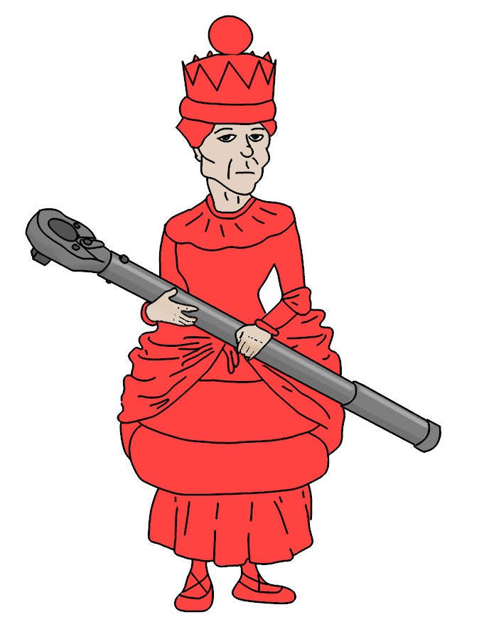

6 The Ratchet and the Red Queen
biology, evolution, sexual reproduction, evolutionary biology

In 1988, Indiana University advertised for an assistant professor in population biology with emphasis on disease ecology. Lynda and I both applied. Happily, we were offered a split position in Biology in which we each got half salary. It may not sound like a good deal, but we were thrilled. It is not easy for a dual-career couple in the same field. We relocated to Bloomington in January 1990, arriving during a cold snap (-20° C). We moved into a university house, but we did not know enough to have the electricity turned on before arrival. Luckily, we still had our down sleeping bags, which we had purchased for field work in the Southern Alps. Aside from the chilly start, moving to Bloomington was the beginning of an academic dream come true.
6.1 The Problem
Since the beginning of my work on sex/asex, there were two things that worried me about the Red Queen Hypothesis. The first of these was pointed out by May and Anderson (1983). This 1983 paper is the same incredible study that launched the wave of studies on the evolution of parasite virulence, but it was also one of the first simulation studies of the Red Queen Hypothesis for sex. May and Anderson concluded that the Red Queen could work, but only if parasites killed their hosts (i.e., they were maximally virulent).1 So, it seemed to me that the Red Queen could not be a general explanation for sex. It was for this reason that I was biased against the hypothesis when I first started my work in New Zealand. But as May and Anderson pointed out, their model made assumptions that were not brought down from Mt. Sinai.
They assumed, in particular, that infection was mediated by a single locus with two alleles, giving three genotypes. They also assumed that the clonal population was initiated with all three possible genotypes for resistance. These are critical assumptions, as we will see in Part Two (or see Lively 2018).
The second problem was that parasites do not select for sex per se. They only select against common genotypes. This means that once parasites drive a common clone down to a rare frequency, it should become favored by selection. Barring loss of the clone by chance in small populations, the clone should increase in frequency, eventually leading to oscillations over time. So, while parasites might prevent the fixation of the clone in the short term, they do not eliminate it. Now here is the problem. What if a second clone, with a different genotype, arises in the population? It should also spread when rare. So should any new clone. Given that parasites are simply a source of frequency-dependent selection, parasite-mediated selection should lead to the accumulation of different clonal genotypes (Lively & Howard 1994).2 It seemed obvious that, if clonal diversity became sufficiently high, the diverse clonal population would eliminate the sexual population. Hence the Red Queen did not seem stable in the face of repeated mutation to asexual reproduction. I began to think that combining alternative hypotheses might be useful. I turned first to Muller’s ratchet.
6.2 Muller’s Ratchet
Herman J. Muller was a prize-winning geneticist. He won the Nobel Prize in Medicine and Physiology just one year after moving to Indiana University in 1945. In the early 1960s, Muller was invited to write an introductory paper for a new journal. The editor made an effort to acknowledge Muller in the preface to this first issue (Sobels 1964): We are particularly honored that we can start the journal with a paper by Dr. H. J. Muller.
In this inaugural paper, Muller wrote a bomb sentence (1964): [w]e find that an asexual population incorporates a kind of ratchet mechanism, such that it can never get to contain, in any of its lines, a load of mutations smaller than that already existing in its at present least-loaded lines.
In other words, obligately asexual populations should accumulate deleterious mutations over time. A decade later, Joe Felsenstein named the idea Muller’s ratchet
(1974), and he pointed to the probable importance of the ratchet in population genetics.3 The concepts underlying the idea are not especially intuitive, but I will try to explain the gist of it. First, we must ask, what is a clone?
I have been using clone
so far to describe a group of genetically identical descendants from a single asexual individual. But Muller knew that this was not strictly true because mutation happens. Thus, as any new clone spreads in a population, mutations accumulate, leading to variation among individuals in the number of mutations (Figure 6.1). It must be true then that there is a group of individuals within the clone that have the fewest mutations. Muller called this the least-loaded class.
Here is Muller’s insight. Given that the least-loaded class in a finite population might be a handful of individuals, the least-loaded (most fit) class could be lost by chance. How would that happen? Two ways. First, the members of the least-loaded class (LLC
) could be lost by bad luck. Maybe all five of members of the LLC were washed away by a flood, or anything related to being in the wrong place at the wrong time. Second, the members of the LLC might produce offspring with one (or more) new mutations. Clearly, the two options are not mutually exclusive. The point is the least-loaded class can be lost. This means that the ratchet clicks towards a greater mean number of mutations in an asexual line.
My students will immediately engage, Okay, but the most-loaded class could also be lost for the same reason.
Yes, that is correct. But the most-loaded class can be restored by new mutations in the second most-loaded class. In contrast, the LLC can only be restored by back mutation, which has a very low probability of occurrence. Hence, the mean number of mutations in a clonal lineage is expected to increase over time, thereby decreasing mean fitness and eroding the advantage to asexual reproduction.
The ratchet, however, takes a long time to work, especially in large populations where genetic drift is less problematic. As such, a clone would likely outcompete and eliminate the coexisting sexual population before the ratchet drives the clone to extinction. Hence, Muller’s ratchet does not seem to be a viable stand-alone explanation for the persistence of obligately sexual populations. But what if there were a force that periodically reduced the number of clonal individuals? That should increase the rate of mutation accumulation by genetic drift in the asexual lineage. Hopefully, you can see where this is going.
6.3 Synergistic Ideas? The Ratchet and the Red Queen
Here is the idea. Parasite-mediated selection against common genotypes might prevent the fixation of a clone in the short term. Parasites could also drive clones through periodic bottlenecks, which would speed up the rate at which the ratchet clicks. The ratchet could then gradually reduce the reproductive advantage of asexual reproduction. Eventually the clone would be eliminated, not by parasites, but by a parasite-driven ratchet. Perhaps the ratchet could eliminate different clonal lineages as quickly as they were generated by mutation in the sexual population.
My first PhD student at Indiana University was Steve Howard, who transferred in from another lab. Early on, we had many discussions about our experiences as construction workers and our fondness for characters in John Steinbeck’s books. We also began to expand on the possibility of synergism between the ratchet and the Red Queen. During one of our sessions, Steve (in a whimsical moment) said that he could have a solution in the morning. But it was not an overnight problem to solve, as we both soon realized. The solution required an individual-based computer simulation, which was not common at that time (Judson 1994). By that I mean that Steve had to write a simulation that kept track of every individual in the population, including whether it became infected, and whether it produced offspring with one or more new mutations. Steve is a locked-on theoretician. He could not sleep during the construction of his model, and he would sometimes call me in the middle of the night. First, he had to show that the model would converge on analytical solutions for the number of mutations at equilibrium. This equilibrium is called mutation-selection balance,
which occurs when the input of mutations is exactly cancelled out by the elimination of mutations by natural selection (Section 6.5). But what is the analytical solution?
As in any model, there are assumptions involved. For starters, let’s assume that the proportional reduction in fitness caused by each new mutation is the same as for all previous mutations (independent effects). Therefore, the fitness of an individual with \(k\) mutations is given by \((1-s)^k\) where \(s\) gives the selection against each mutation. Kimura and Maruyama (1966) showed that the number of mutations at mutation-selection balance is equal to \(U/s\), where \(U\) is the expected number of new mutations in offspring. Further, they showed that mean fitness at mutation-selection balance is equal to \(e^{-U}\), assuming that selection is weak (Figure 6.1). Following Kimura and Maruyama’s results, John Haigh showed further that the number of individuals in the least-loaded class (\(n_0\)) at mutation-selection balance is: \(n_0=Ne^{-U/s}\) where \(N\) is the total population size (Haigh 1978). Keep in mind that the number of individuals in the least-loaded class (\(n_0\)) is an especially important value, because the smaller the number, the easier it is to lose it by drift, resulting in one click of the ratchet. Haigh also showed that, once the ratchet clicks, the original (Poisson) distribution of mutations is reset, where the mean of the distribution is increased by one (Figure 6.2). Critically, Haigh’s result suggests that \(n_0\) can be fewer than 10 individuals, even for very large population sizes. The ratchet seems unavoidable.
Happily, Steve’s simulation converged on the analytically derived values for the mean number of mutations and the mean fitness at mutation-selection balance. Now for the more difficult part. Does host-parasite coevolution accelerate the accumulation of mutations in clonal lineages? Does the combination of the ratchet and the Red Queen lead to extinction of the clone before it eliminates its sexual competitors? Note that the simulation made the conservative assumption that infected individuals in the most-loaded class had the same fitness as infected individuals in the LLC. In other words, infection was not more severe in individuals having more mutations.
Steve’s simulations showed that, in the absence of parasites, an initially rare clone went to fixation in fewer than 50 generations, thereby driving the sexual population extinct (Howard & Lively 1994b).4 However, after about 500 generations, the clone also went extinct due to the accumulation of mutations via the ratchet. Hence, the ratchet was sufficient to take out the clone, but not before the clone replaced the entire sexual population. In the presence of parasites, but without the ratchet, the clone also rapidly replaced the sexual subpopulation, and the clone’s descendants remained at carrying capacity for the duration of the simulation (Figure 6.3).
By contrast, when parasites were combined with the ratchet, sexual reproduction was initially invaded by the clone, but the clone did not replace the sexuals. How does that work? The clone was initiated with a small number of individuals (\(N = 20\)) at mutation-selection balance. The clone then increased when rare, but as the clone spread in the population, the ratchet was already working to reduce the two-fold cost of males (see Chapter 1). In addition, as the clone became common, the parasite population rapidly evolved to infect it. This combination of the ratchet and parasite-mediated frequency-dependent selection prevented the clone from fixing in the short term. The clone then began to oscillate in frequency over time. But every time the clone was driven to low frequency, the number of individuals in the LLC decreased, thereby allowing for a more rapid operation of the ratchet. Notably, over the period of several oscillations, the clone tended to be driven to lower frequencies each time. So as the ratchet erodes the cost of males, the clone was driven to a lower frequency during successive oscillations, which fed back to fuel the ratchet. The clone is toast. Eventually the clone undergoes a mutational meltdown and goes extinct (Lynch & Gabriel 1990).5 This example provides a proof of concept that host-parasite coevolution can work in a synergistic way with Muller’s ratchet to prevent fixation of the clone in the short term (<20 generations) and to ensure the elimination of the clone in the longer term.
To get a better feeling of the parameter space over which the ratchet and the Red Queen could work to select for sex over the long term, Steve explored different combinations of mutation rate, selection against mutation, parasite virulence, and parasite transmission. In the absence of mutation, the results showed that sexual reproduction was evolutionarily stable only when parasites were both extremely virulent and highly transmissible (Figure 6.4). This result was consistent with the model of May and Anderson (1983). Sexuals and asexuals coexisted where parasite virulence and transmission were both high, but not at maximum values (Figure 6.4). Finally, asexual reproduction replaced sexual reproduction when parasites had low levels of virulence and/or transmission.
Now, what if we add in mutation? Steve’s results suggested that for genome-wide mutation rates of \(U = 0.5\) to \(1.0\), sexual reproduction was stable to replacement by asexual reproduction, even when parasites were only moderately virulent.6 This surprised us! One of the major difficulties for the Red Queen had been that May and Anderson’s (1983) results suggest that parasites had to kill or sterilize infected hosts to provide sufficiently strong selection for cross-fertilization. Steve’s new results suggested that, in combination with the ratchet, parasites did have to generate such strong selection against infected individuals (Figure 6.5). When we started out, we had not imagined that the synergism between the ratchet and the Red Queen could be so powerful.7
The potential for synergism between antagonistic coevolution and mutation accumulation later became the subject of a target review in 1999, headed up by Stuart West (1999). Stu was a post-doc in Andrew Read’s lab in Edinburgh while I was there as a sabbatical visitor in the lab. But the whole thing originally started at a meeting we all attended at the Max Planck Institute in Seewiesen, Germany. It was an amazing gathering on the evolution of sex, organized by Nico Michiels, with an incredible mix of faculty, post-docs, and students. I presented some of the snail data along with the results of Howard and Lively (1994b) to a rather mixed reaction. To my mind, it seemed that the students and post-docs (including Stu) liked the idea of combining hypotheses, but at least one of the more established members in the field saw it as an attempt by hippies to make everyone happy.8 In any case, Stu expanded on the basic idea back in Edinburgh, and he convinced Andrew and me to help him craft it as a target review for the Journal of Evolutionary Biology. I was very reluctant, as several key researchers in the field would be asked to publish their thoughts on the matter, which I knew were unlikely to be uniformly positive. In the end, our paper was published—along with over a dozen commentaries (see vol. 12, issue 6). The commentaries were more positive on average than I expected, but mainly it was interesting to see the diversity of thought by some of the top biologists studying sex and recombination at the time.
My work with Steve Howard on synergism between the ratchet and the Red Queen led me to rethink my views on Strong Inference, as discussed in Chapter 3, where the goal is to force competing hypotheses to make different predictions before getting the data. But what if the answer is some combination, or even synergism, between hypotheses? It could be that forcing predictions could result in the rejection of all alternatives, when in fact two or more hypotheses were partially true. And if two hypotheses are strongly synergistic, would it be appropriate to claim that one was more important? In studying this problem, I found an excellent article contrasting Platt’s strong inference with Chamberlin’s method of multiple working hypotheses (Elliott & Brook 2007). Elliott and Brook state that the two methods are often treated as the same idea (of which I was guilty in Chapter 3). But they are not the same. Platt’s paper (which drew heavily from Chamberlin) focused on designing programs that would falsify all but one of the alternatives, whereas Chamberlin allowed for combinations, and even synergism, between competing hypotheses. It now seems to me that Chamberlin’s original (1890) paper better describes the best way forward with respect to the problem of sex.
6.3.1 What about parasites?
One of the major patterns of sex/asex was pointed out by Graham Bell. He found that parasitic species were much more likely to be outcrossing than their free-living relatives (Bell 1982). This finding was emphatically supported by a formal phylogenetic study of free-living versus parasitic nematodes (Gibson & Fuentes 2015). However, much of the theoretical focus for sex/asex has focused on hosts. What about parasites? If host-parasite coevolution can contribute to selection for sexual reproduction in hosts, does it also feedback to select for sex in parasites? If so, is it sufficient? Steve Howard was one of the first theoreticians to address these questions along with Alison Galvani and Katrina Lythgoe (Galvani et al. 2003; Lythgoe 2000). Steve’s results showed that sexual populations of obligate parasites could be invaded and replaced by a diverse population of clonal parasite genotypes. More specifically, repeated mutation to asexual reproduction in the parasite population led to a diverse clonal population, which eventually replaced the ancestral sexual population. However, the ratchet, in combination with Red Queen dynamics, could lead to the elimination of clones and the long-term maintenance of sexual parasite populations (Howard & Lively 2002). Hence, the results for parasites mirror those found for hosts, except that the ratchet worked more rapidly in obligate parasites, as selection is stronger, giving rise to more extreme oscillations during Red Queen dynamics. It is still unknown whether the ratchet and the Red Queen work synergistically to select for sex in either parasites or hosts.9 But it seems like a sensible possibility, especially where both host and parasite genetic diversity is very high, host populations are finite, and parasites rarely coinfect the same host individual. It is also possible, of course, that neither coevolution nor mutation accumulation is required. More empirical and theoretical work is required.
6.4 Summary
The Red Queen Hypothesis is a potentially general way of explaining why clonal lineages don’t rapidly replace sexual competitors in the short term.
But any source of frequency-dependent selection (such as parasites or niche competition) would seem insufficient by itself to eliminate clones when rare. However, the elimination of rare clones could be aided by either demographic stochasticity in finite populations and/or by Muller’s ratchet.
In the case of Muller’s ratchet, parasite-mediated frequency-dependent selection could facilitate the ratchet-like mechanism by periodically reducing the size of the clonal population, thereby increasing the rate of mutation accumulation.
The ratchet/Red Queen idea is very difficult to test, but data for P. antipodarum suggest that long-lived clonal lineages are most likely in populations that are relatively parasite free (Neiman et al. 2005).
6.5 Appendix: Down the Ratchet Hole
Suppose the probability of a new mutation in offspring is \(0.5\). Clearly, it would not make sense to say that every offspring acquires one half of one mutation. But it would make sense to say that offspring have a Poisson distribution of new mutations. Under a Poisson distribution, the frequency of individuals with \(k\) new mutations is given by \[f_k=\frac{e^{-U}U^k}{k!}\] where \(U\) is the probability of a new mutation per generation. Under this formulation, the frequency of offspring that contain no new mutations is given by \[f_0=e^{-U}.\]
Suppose a clonal population begins with a single individual with zero mutations (\(k = 0\) and \(w_0 = 1\)). As above, let all future offspring acquire an average of \(U\) additional mutations per generation. The lineage would gain mutations over time, until the input of mutations is equal to the loss of mutations due to selection. At this point in time, the clonal population is at mutation-selection balance. Kimura and Maruyama (1966) showed that the average number of mutations in a clonal lineage at mutation-selection balance is equal to \(U/s\), where \(s\) is the selection coefficient against each mutation. They also showed that the mean fitness at this balance (assuming that \(s\) is small) is \[\hat{w}=e^{-U}.\] Hence, population mean fitness at equilibrium is expected to be equal to the expected frequency of zero new mutations in offspring.
In an infinite population, we would expect the mean fitness to remain at this equilibrium value. But populations are finite, which leads to Muller’s ratchet. John Haigh constructed the first model to deeply explore the ratchet (1978). He first assumed that each deleterious mutation results in the same proportional reduction in fitness as all previous mutations. Let \(s\) be the selection coefficient against each mutation. Under Haigh’s assumption, an individual with zero mutations would have a relative fitness of \(1\), while an individual with one mutation would have a relative fitness of \((1-s)\), and an individual with two mutations would have a relative fitness of \((1-s)(1-s)\). More generally, an individual with \(k\) mutations would have a relative fitness of \[w_k=(1-s)^k.\] Haigh assumed that the number of individuals having \(k\) mutations \((n_k)\) at mutation-selection balance also follow a Poisson distribution, such that \[n_k=\frac{n_0\left(\frac{U}{s}\right)^k}{k!}.\] In this expression, \(n_0\) is the number of individuals with zero mutations, which is the least-loaded class. How many individuals in the least-loaded class? Let \(N\) be the total number of individuals in the clonal population. Under a Poisson distribution for mutational load, the number of individuals in the least-loaded class is \[n_0=Ne^{-U/s}\] where \(e^{-U/s}\) is the frequency of individuals in the zero class. This means that the LLC can be quite small, even in large clonal populations. For example, let \(N = 100,000\), let \(s = 0.02\), and let \(U = 0.2\). Plugging these values into the solution for \(n_0\) we find that only five individuals would be in the LLC at mutation-selection balance. Such a small group is at risk of loss by genetic drift.
Haigh ran simulations to study the loss of the LLC, and the effect of this loss on the distribution of mutational classes. He found that following the loss of the LLC, the entire distribution shifted to a greater mean number of mutations, but the shape of the distribution remained constant. Hence, after one click of the ratchet, the LLC still had about five individuals, but now the LLC had one additional mutation. The mean number of mutations had also increased by one.